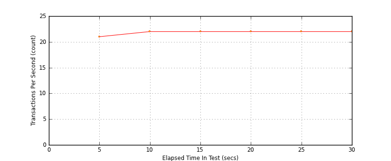
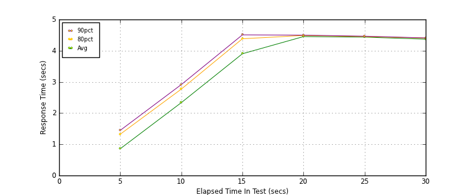
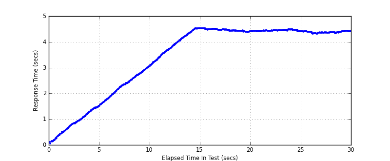

Performance Results Report
Summary
transactions: 767
errors: 0
run time: 30 secs
rampup: 10 secs
test start: 2014-01-15 15:35:51
test finish: 2014-01-15 15:36:21
time-series interval: 5 secs
workload configuration:
| group name | threads | script name |
|---|
| user_group-1 | 100 | read_user.py |
All Transactions
Transaction Response Summary (secs)
| count | min | avg | 80pct | 90pct | 95pct | max | stdev |
|---|
| 767 | 0.052 | 3.416 | 4.438 | 4.473 | 4.489 | 4.522 | 1.375 |
Interval Details (secs)
| interval | count | rate | min | avg | 80pct | 90pct | 95pct | max | stdev |
|---|
| 1 | 107 | 21.40 | 0.052 | 0.858 | 1.323 | 1.447 | 1.458 | 1.514 | 0.428 |
| 2 | 111 | 22.20 | 1.556 | 2.336 | 2.770 | 2.915 | 3.002 | 3.091 | 0.438 |
| 3 | 111 | 22.20 | 3.094 | 3.902 | 4.383 | 4.508 | 4.515 | 4.522 | 0.445 |
| 4 | 114 | 22.80 | 4.374 | 4.453 | 4.488 | 4.499 | 4.520 | 4.522 | 0.040 |
| 5 | 113 | 22.60 | 4.401 | 4.436 | 4.452 | 4.465 | 4.478 | 4.489 | 0.021 |
| 6 | 111 | 22.20 | 4.303 | 4.370 | 4.405 | 4.411 | 4.418 | 4.423 | 0.031 |
Graphs
Response Time: 5 sec time-series
Response Time: raw data (all points)
Throughput: 5 sec time-series

Custom Timer: get_tweets
Timer Summary (secs)
| count | min | avg | 80pct | 90pct | 95pct | max | stdev |
|---|
| 667 | 0.052 | 3.415 | 4.438 | 4.473 | 4.488 | 4.522 | 1.375 |
Interval Details (secs)
| interval | count | rate | min | avg | 80pct | 90pct | 95pct | max | stdev |
|---|
| 1 | 107 | 21.40 | 0.052 | 0.857 | 1.323 | 1.446 | 1.458 | 1.514 | 0.428 |
| 2 | 111 | 22.20 | 1.556 | 2.336 | 2.769 | 2.915 | 3.002 | 3.090 | 0.438 |
| 3 | 111 | 22.20 | 3.094 | 3.902 | 4.383 | 4.508 | 4.514 | 4.522 | 0.445 |
| 4 | 114 | 22.80 | 4.373 | 4.453 | 4.488 | 4.499 | 4.520 | 4.522 | 0.040 |
| 5 | 113 | 22.60 | 4.401 | 4.435 | 4.452 | 4.465 | 4.478 | 4.488 | 0.021 |
| 6 | 111 | 22.20 | 4.303 | 4.370 | 4.405 | 4.410 | 4.418 | 4.423 | 0.031 |
Graphs
Response Time: 5 sec time-series

Response Time: raw data (all points)

Throughput: 5 sec time-series